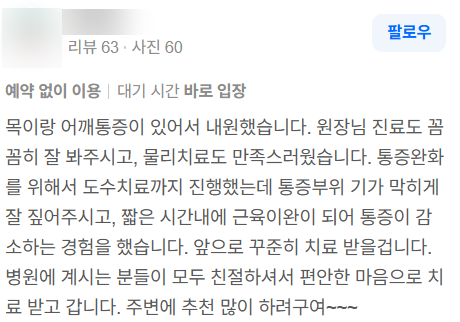
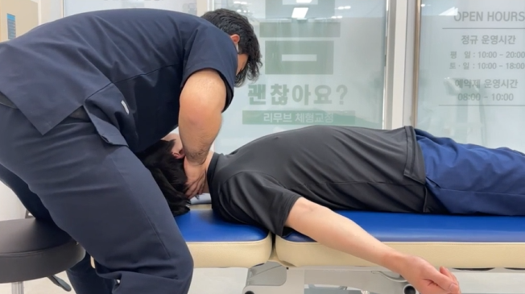
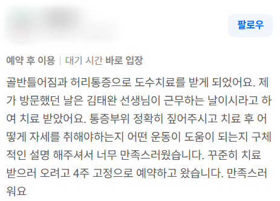

안녕하세요.
물리치료사 출신 체형교정 전문가, 리무브 체형교정 센터장입니다.

지난 1편 글에서는 제가 왜 수년간 일해온 안정적인 병원을 나와 구리 갈매동에 '리무브 체형교정'을 열게 되었는지, 그 솔직한 이야기를 들려드렸습니다.
오늘은 도수치료실에서 근무하던 시절,
"선생님 계시는 날로 4주 예약하고 갈게요"라며
저를 굳이 굳이 찾아주셨던 환자분들의 실제 후기와 함께,
제가 어떤 원칙과 철학으로 체형을 케어해 왔는지 솔직하게 풀어보려 합니다.
글이 너무 길어질 것 같아 1부와 2부로 나누어 들려드리겠습니다.
오늘은 그 첫 번째 이야기(1부)입니다.
💡 1. "통증 부위는 피해자일 뿐, 진짜 '가해자'는 따로 있습니다"

목과 어깨 통증으로 병원을 찾아주셨던 고객님의 실제 리뷰입니다.
도수치료나 마사지를 받아보신 분들은 다들 공감하실 겁니다.
어떤 곳에 가면 아픈 부위 주변만 슬렁슬렁 문지르다 끝나서,
'어라? 이게 맞나...?' 싶었던 찝찝한 경험 한 번쯤 있으실 겁니다.
ㅎㅎ.. 당연히 안 되겠죠??
그러니까 매번 "그때 받을 때만 잠깐 괜찮았다"는 얘기가 나오는 겁니다...
겉으로 드러난 통증 부위만 만져서는 절대 근본적인 해결이 되지 않습니다.
목이 아프다고 목만 주물러서 나을 거였으면,
애초에 이렇게 만성으로 아프지도 않았을 겁니다.
신체 불균형에서 대부분의 통증 부위는 '피해자' 포지션입니다.
진짜 '가해자'는 숨어 있는 경우가 99%쯤 되거든요.
그 숨은 가해자를 정확하게 찾아내는 것이 바로 진짜 전문가의 몫입니다.
그 가해자를 제대로 찾아서 해결하면 어떤 일이 일어나는지 궁금하시죠?

저를 처음 찾아오시는 분들은 참 신기한 경험들을 하십니다.
- 목의 정렬을 교정했더니 수개월간 굳어있던 어깨 뭉침이 싹 사라지거나,
- 다리로 내려가는 신경 통로를 이완했더니 허리 통증이 갑자기 하나도 안 느껴진다거나.

심지어 교정을 받으시다가 진짜로 베드에 누워서 짝짝짝 박수를 치시는 분도 계셨습니다;;; (자주 있는일...)
일반인의 입장에서는 단순하게 *"통증이 잡혔다"*, *"시원하다"*라고 느끼시겠지만,
그게 바로 엉뚱한 곳을 건드리지 않고 '진짜 가해자(근본 원인)'를 정확히 타깃팅한 결과입니다. 고놈이 진짜 범인이었던 거죠.
내 몸에 뭐가 문제일까 혼자 너무 끙끙 앓지 마세요.
내 체형에 딱 맞지도 않는 유튜브 스트레칭, 무작정 너무 찾아보며 따라 하지 마세요.
그냥 내 몸을 믿고 맡길 수 있는 근처의 진짜 전문가에게 한번 맡겨보시는 건 어떨까요?
(물론... 그 '진짜 전문가'를 감별해내는 게 가장 어려운 일이겠지만,
최소한 갈매동에 계신 분들이라면 걱정 안 하셔도 됩니다;;;ㅎㅎ)

💡 2. "자세 신경 쓰지 마세요" 바른 정렬을 만드는 5분의 법칙

골반 틀어짐과 허리 불편감으로 찾아주셨던 고객님의 실제 리뷰입니다.
제 교정 철학을 가장 잘 보여주는 소중한 후기입니다.
"베드에 가만히 누워서 마사지만 받고 끝나는 관리는,
문을 열고 나서는 순간 제자리로 돌아갑니다."
전문가가 아무리 손으로 뼈의 정렬을 맞추고 굳은 근육을 풀어놓아도, 일상에서 쓰는 근육 패턴을 재교육해놓지 않으면 다시 자기 멋대로 틀어지는 데는 하루도 걸리지 않습니다.
그래서 저는 손으로 급한 긴장을 풀고 나면,
항상 가벼운 근육 사용법(재교육)을 가르쳐 드리는 데 정성을 씁니다.
내 근육, 신경, 관절의 밸런스가 온전치 못하면,
아무리 애를 써도 좋은 자세가 나올 수 없습니다.(마치 골프자세처럼...)
반대로 말하면, 내 근육과 신경이 온전하게 제 기능을 찾으면
굳이 애쓰지 않아도 바른 자세가 자연스럽게 나옵니다.
그래서 저는 고객님들께 항상 이렇게 말씀드립니다.
"평소에 자세는 너무 신경 쓰지 마세요. 본인이 편한 대로 편하게 지내세요.
대신, 방금 저랑 배운 운동 하나라도 자기 전에 꼭 신경 써주세요."
여러분들이 잠들기 전 챙겼던 그 5분의 운동 시간이,
다음 날 여러분의 하루 자세를 만듭니다.
이건 정말 진짭니다...
🌿 "불편함을 Remove, 내 몸을 Re-move"

"불편함을 Remove, 내 몸을 Re-move"
오랜 시간 여러분을 괴롭혀온 틀어짐과 만성 불편감은 깨끗하게 제거(Remove)하고,
굳어버린 신체에 본래의 바르고 자유로운 움직임을 다시(Re-move) 선물해 드립니다.
긴 글 읽어주셔서 진심으로 감사합니다.
[리무브 체형교정 찾아오시는 길]
📍 경기 구리시 갈매순환로 154 갈매현대테라타워 S동 L104호
💬 문의/예약: 네이버 톡톡 또는 댓글로 편하게 남겨주세요.

#리무브체형교정 #구리체형교정 #갈매체형교정 #물리치료사출신 #체형교정센터 #골반교정 #체형분석 #재활운동 #자세교정 #거북목교정 #체형교정후기 #체형관리